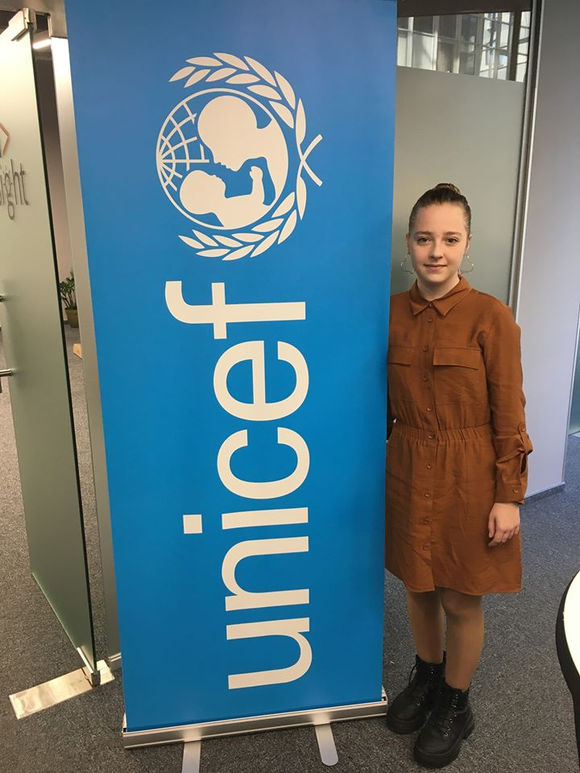

Я, Бекетова Алиса Александровна, родилась в городе Киев 14 декабря 2005 года. В декабре 2006 моя семья переехала в Днепр. В 2012 году я пошла в первый класс КЗО СЗШ №69. После шестого класса я перешла в НВК № 131.
Первые попытки стихосложения были у меня еще в детском саду. В 2014 году впервые мой стих «Суши от Алиски» было напечатано в сборке «Рецепты GROW» от издательства OXFAM. Потом в школе учительница прочитала мои произведения и предложила попробовать себя почувствовать поэтом и рассказать про то, что люблю, что меня интересует. Так, впервые в жизни взяла участие в конкурсе «Собори наших душ» в 2015-2016рр. Мой стих «За що Україну люблю» было напечатано в сборнике «Собори наших душ» №16.
Я имею твердые знания по всем предметам, раньше интересовалась гуманитарными предметами: украинский язык и литература, английский язык, украинознавство. Принимала и принимаю активное участие в школьных конкурсах, олимпиадах, викторинах. Но после изменения обучаемого учреждения начала интересоваться точными науками, как: физика, алгебра, геометрия и информатика. Также стала студентом компьютерной академии «ШАГ».
Хоть сейчас я вникла в точные науки, но не забываю о своем любимом хобби с самого детства. В начале этого года детский фонд ООН «Юнисеф» проводили литературный конкурс для детей Донбасса. Мои родители родом оттуда, и я не смогла пройти мимо этого конкурса и все-таки решила поучаствовать. Жюри конкурса понравилось мое стихотворение. После результатов меня пригласили на запись моего стиха и встречу с Ириной Цилык. Было приятно пообщаться с таким человек, я мотивировалась, и теперь хочу продолжать свое дело совмещая с новыми увлечениями.